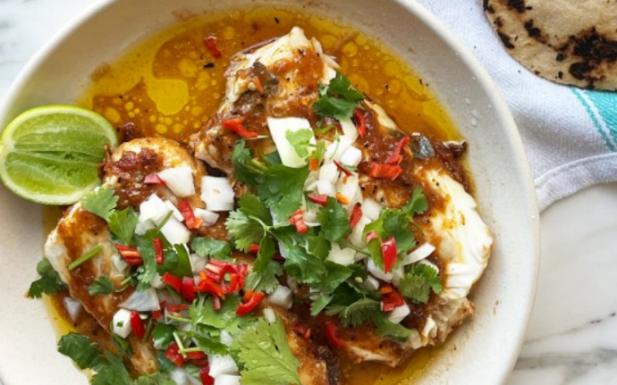

Slow-Cooked Hake in Cascabel Oil with Corn Tortillas

You need quite a lot of oil to slow-cook the fish in, but it results in an incredibly aromatic oil that you won’t want to stop mopping up with tortillas. Any leftover oil can be kept in the fridge for two days and tossed through pasta or rice. Masa harina flour is made of dried corn that is rehydrated in slaked lime; it is not to be confused with cornflour. It is available online and in some specialty shops, but you can also use good commercial corn tortillas instead of making your own, such as the ones sold by the Cool Chile Company.
For the corn tortillas
Put the first nine ingredients, the lime juice and one and-a-half teaspoons of flaked salt in a large saucepan on a medium heat. Cover with a small plate to keep the fish below the surface of the oil. Once the oil starts to bubble, reduce the heat to its lowest setting and cook for 45 minutes, until the fish is tender and flaky. If the oil bubbles at all, take the pan off the heat until it stops, then put it back – the heat throughout should be very gentle. Leave the fish to cool for 15 minutes before serving.
Meanwhile, make the tortillas. Put the masa harina and a good pinch of salt in a medium bowl, slowly pour in 250ml boiling water, and stir to combine. Cover with a damp towel and leave the mixture to cool – it will be quite wet and loose to begin with, but the flour will absorb the water as it cools. Once the dough is cool enough to handle, knead it into a smooth, round ball – it should feel like playdough. If it feels at all dry, just wet your hands a little as you knead it.
Divide the dough into 12, pieces weighing about 30g each. Lightly grease a surface and your hands with a little vegetable oil and roll each piece into a smooth ball, adding a little more oil if the dough sticks to the surface. Keep any dough that you are not working with covered with a damp cloth.
Heat a large frying pan on a high heat until it is very hot. Have a folded, very slightly damp tea towel ready on the side to tuck tortillas in once cooked. Squash each ball between pieces of baking paper with a heavy pan, into 12cm discs. Take off the top piece of paper, flip into the pan, cook for 10 seconds, then take off the top piece of paper. Cook on the same side for another minute or two, until brown spots begin to form, then flip and cook for a minute more. Remove, cover with a tea towel and repeat with the remaining tortillas.
Transfer the fish, aromatics and oil to a large, shallow bowl and sprinkle with the coriander and some flaked salt. Squeeze the lime wedges on top and serve with the tortillas.